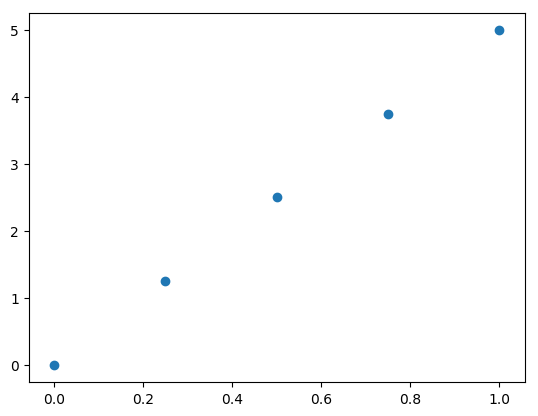
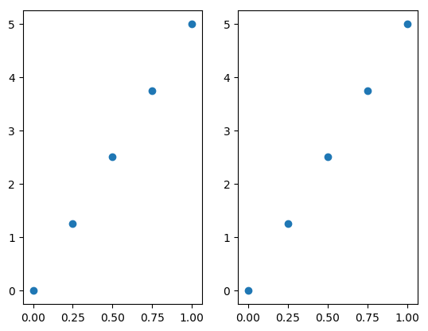
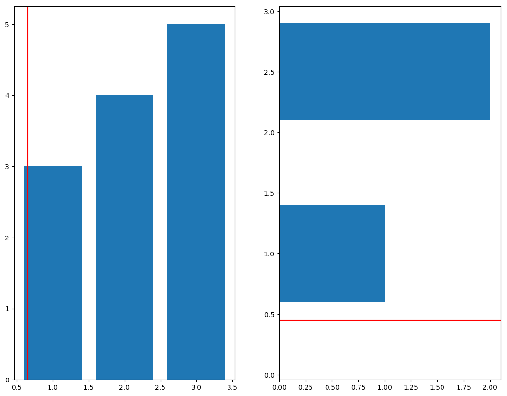
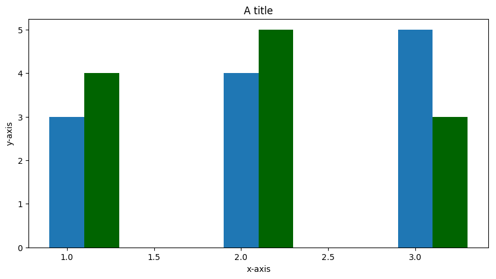
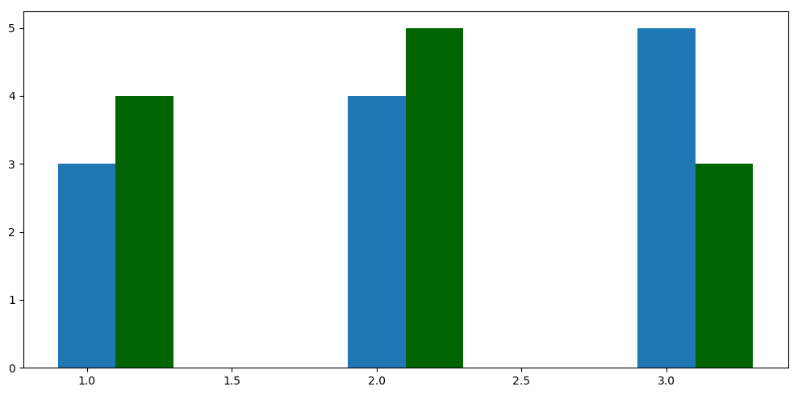
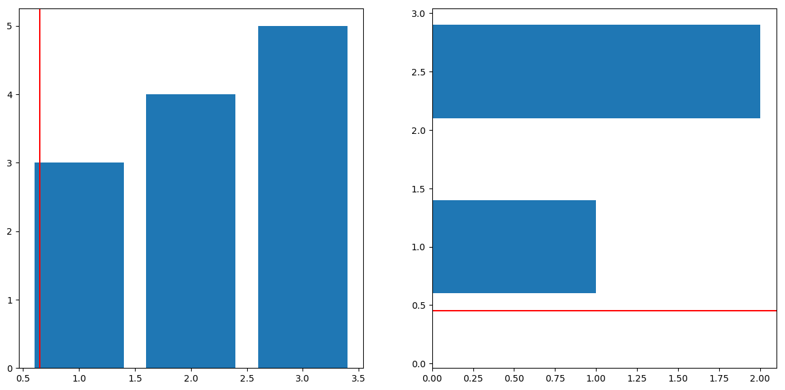
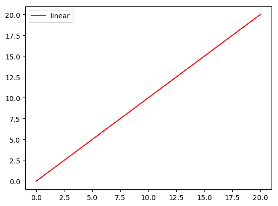

Matplotlib, Python Plotting
Foreword
Code snippets and excerpts from the tutorial. Python 3. From DataCamp.
With Jupyter Notebook and the In [ ] Out [ ] format.
A Matplotlib Python Plot¶
Imports, prepare some data, and start plotting.
1 2 3 4 5 6 7 8 9 10 | %matplotlib inline # Import the necessary packages and modules import matplotlib.pyplot as plt import numpy as np # Prepare the plot import matplotlib as mpl mpl.rcParams['lines.linewidth'] = 1 plt.style.use("default") |
1 2 3 | # Prepare the data x = np.linspace(0, 10, 100) print(x) |
1 2 3 4 5 6 7 8 9 10 11 12 13 14 15 16 17 18 19 20 | [ 0. 0.1010101 0.2020202 0.3030303 0.4040404 0.50505051 0.60606061 0.70707071 0.80808081 0.90909091 1.01010101 1.11111111 1.21212121 1.31313131 1.41414141 1.51515152 1.61616162 1.71717172 1.81818182 1.91919192 2.02020202 2.12121212 2.22222222 2.32323232 2.42424242 2.52525253 2.62626263 2.72727273 2.82828283 2.92929293 3.03030303 3.13131313 3.23232323 3.33333333 3.43434343 3.53535354 3.63636364 3.73737374 3.83838384 3.93939394 4.04040404 4.14141414 4.24242424 4.34343434 4.44444444 4.54545455 4.64646465 4.74747475 4.84848485 4.94949495 5.05050505 5.15151515 5.25252525 5.35353535 5.45454545 5.55555556 5.65656566 5.75757576 5.85858586 5.95959596 6.06060606 6.16161616 6.26262626 6.36363636 6.46464646 6.56565657 6.66666667 6.76767677 6.86868687 6.96969697 7.07070707 7.17171717 7.27272727 7.37373737 7.47474747 7.57575758 7.67676768 7.77777778 7.87878788 7.97979798 8.08080808 8.18181818 8.28282828 8.38383838 8.48484848 8.58585859 8.68686869 8.78787879 8.88888889 8.98989899 9.09090909 9.19191919 9.29292929 9.39393939 9.49494949 9.5959596 9.6969697 9.7979798 9.8989899 10. ] |
1 2 3 4 5 6 7 8 | # Plot the data plt.plot(x, x, label='linear') # Add a legend plt.legend() # Show the plot plt.show() |

- Figure.
- Title, sub, text, legend.
- Axes with
plot()andscatter()with ticks, labels, etc.

ax.plot()callsplt.plot().ax.scattercallsplt.scatter.ax.set_xlimcallplt.xlim.
With multiple axes, be explicit and prefer the first snippet to the second. See below.
1 2 3 4 5 6 7 8 9 10 | import matplotlib.pyplot as plt fig = plt.figure() ax = fig.add_subplot(111) ax.plot([1, 2, 3, 4], [10, 20, 25, 30], color='lightblue', linewidth=3) ax.scatter([0.3, 3.8, 1.2, 2.5], [11, 25, 9, 26], color='darkgreen', marker='^') ax.set_xlim(0.5, 4.5) plt.show() |

1 2 3 4 5 6 7 | import matplotlib.pyplot as plt plt.plot([1, 2, 3, 4], [10, 20, 25, 30], color='lightblue', linewidth=3) plt.scatter([0.3, 3.8, 1.2, 2.5], [11, 25, 9, 26], color='darkgreen', marker='^') plt.xlim(0.5, 4.5) plt.show() |

- Each Axes has an x-axis and a y-axis, which contain ticks, which have major and minor ticklines and ticklabels.
- The axis labels, title, and legend.
- Spines are lines that connect the axis tick marks and that designate the boundaries of the data area. The right and top spines are set to invisible.

- Everything drawn using
matplotlibis part of the Artist module. The containers to plot the data, such as Axis, Axes, and Figure, and other graphical objects such as text, patches, etc. - GALLERY.
matplotlib, pyplot and pylab: how are they related?¶
pyplot is a module in matplotlib to implicitly and automatically create figures and axes. Everything can be customized though.
%pylab and %pylab inline import pyplot and numpy. %matplotlib and %matplotlib inline import pyplot.
matplotlib can save images to the local file system.
Create a Plot¶
1 2 3 4 5 6 7 8 | # Import `pyplot` import matplotlib.pyplot as plt # Initialize a Figure fig = plt.figure() # Add Axes to the Figure fig.add_axes([0,0,1,1]) |
1 | <matplotlib.axes._axes.Axes at 0x7f796d5c7ac8> |

A Subplot¶
Axes and subplot are synonymous. There is, however, a difference between the add_axes() and the add_subplots() function.
1 2 3 4 5 6 7 8 9 10 11 12 13 14 15 | # Import the necessary packages and modules import matplotlib.pyplot as plt import numpy as np # Create a Figure fig = plt.figure() # Set up Axes ax = fig.add_subplot(111) # Scatter the data ax.scatter(np.linspace(0, 1, 5), np.linspace(0, 5, 5)) # Show the plot plt.show() |

111 designates the number of rows (1), the number of columns (1) and the plot number (1); it means one subplot.
1 2 3 4 5 6 7 8 9 10 11 12 13 14 15 16 17 | # Create a Figure fig = plt.figure() # Set up Axes of no 1 ax = fig.add_subplot(121) # Scatter the data ax.scatter(np.linspace(0, 1, 5), np.linspace(0, 5, 5)) # Set up Axes of no 2 ax = fig.add_subplot(122) # Scatter the data ax.scatter(np.linspace(0, 1, 5), np.linspace(0, 5, 5)) # Show the plots plt.show() |

The Difference Between add_axes() and add_subplot()¶
add_axes()is the lower left point, the width, and the height. In cases where the positioning matters.add_subplot()is a grid: the number of rows, columns, and the plot number.
Change the Size of Figures¶
plt.figure(figsize=(3,4)) for the width and height in inches.
1 2 3 4 5 6 7 8 9 10 11 | import matplotlib.pyplot as plt # Initialize the plot fig = plt.figure(figsize=(20,10)) ax1 = fig.add_subplot(121) ax2 = fig.add_subplot(122) ax1.bar([1,2,3],[3,4,5]) ax2.barh([0.5,1,2.5],[0,1,2]) plt.show() |

1 2 3 4 5 6 7 8 9 | import matplotlib.pyplot as plt # Initialize the plot fig, (ax1, ax2) = plt.subplots(1,2, figsize=(20,10)) ax1.bar([1,2,3],[3,4,5]) ax2.barh([0.5,1,2.5],[0,1,2]) plt.show() |

Working With Pyplot: Plotting Routines¶
Common plots.
ax.bar(): Vertical rectangles.ax.barh(): Horizontal rectangles.ax.axhline(): Horizontal line across axes.ax.axvline(): Vertical line across axes.ax.fill(): Filled polygons.ax.fill_between(): Fill between y-values and 0 (area plot).ax.stackplot(): Stack plot.
1 2 3 4 5 6 7 8 9 10 11 12 13 14 15 16 17 18 19 20 21 22 23 24 25 | import matplotlib.pyplot as plt fig = plt.figure(figsize=(20,10)) ax1 = fig.add_subplot(231) ax2 = fig.add_subplot(232) ax3 = fig.add_subplot(233) ax4 = fig.add_subplot(234) ax5 = fig.add_subplot(235) ax6 = fig.add_subplot(236) ax1.bar([1,2,3],[3,4,5]) ax1.axvline(1.65, color='red', linewidth=2) ax2.barh([0.5,1,2.5],[0,1,2]) ax2.axhline(1.45, color='red', linewidth=2) ax3.scatter([1,2,3],[3,4,8], marker='^') ax4.plot([1, 2, 3, 4], [10, 20, 25, 30], color='lightblue', linewidth=3) ax5.fill_between([1,2,3],[3,4,8]) ax6.stackplot([1,2,3],[3,4,8]) plt.show() |

Specialized plots.
ax.arrow(): Arrow.ax.quiver(): 2D field of arrows.ax.streamplot(): 2D vector fields.ax.hist(): Histogram.ax.boxplot(): Boxplot.ax.violinplot(): Violinplot.
1 2 3 4 5 6 7 8 9 10 11 12 13 14 15 16 17 18 19 20 21 22 23 24 25 26 27 28 29 30 | import matplotlib.pyplot as plt fig = plt.figure(figsize=(20,10)) ax1 = fig.add_subplot(231) ax2 = fig.add_subplot(232) ax3 = fig.add_subplot(233) ax4 = fig.add_subplot(234) ax5 = fig.add_subplot(235) ax6 = fig.add_subplot(236) ax1.arrow(0, 0, 0.5, 0.5, head_width=0.05, head_length=0.1, fc='k', ec='k') X, Y = np.meshgrid(np.arange(0, 2 * np.pi, .2), np.arange(0, 2 * np.pi, .2)) U = np.cos(X) V = np.sin(Y) ax2.quiver(X, Y, U, V, units='width') Y, X = np.mgrid[-3:3:100j, -3:3:100j] U = -1 - X**2 + Y V = 1 + X - Y**2 speed = np.sqrt(U*U + V*V) ax3.streamplot(X, Y, U, V, color=U) ax4.hist(np.random.rand(50) * 100) ax5.boxplot(np.random.rand(50) * 100) ax6.violinplot(np.random.rand(50) * 100) plt.show() |

And more specialized plots.
ax.pcolor(): Pseudocolor plot.ax.pcolormesh(): Pseudocolor plot.ax.contour(): Contour plot.ax.contourf(): Filled contour plot.ax.clabel(): Labeled contour plot.
Contour plots are used to explore the potential relationship between three variables. Pseudocolor plots can be used for this purpose since they are surface plot seen from above.
Customize pyplot¶
See the online plot Gallery.
Delete an Axis¶
1 2 3 4 5 6 7 8 9 10 11 12 13 14 15 16 17 18 19 20 | import matplotlib.pyplot as plt import numpy as np fig = plt.figure(figsize=(20,10)) ax1 = fig.add_subplot(131) ax2 = fig.add_subplot(132) ax3 = fig.add_subplot(133) ax1.bar([1,2,3],[3,4,5]) ax1.axvline(0.65, color='red') ax2.barh([0.5,1,2.5],[0,1,2]) ax2.axhline(0.45, color='red') ax3.scatter(np.linspace(0, 1, 5), np.linspace(0, 5, 5)) # Delete `ax3` !!! (add them back further down) fig.delaxes(ax3) plt.show() |

1 2 3 4 5 6 7 8 9 10 11 12 13 14 15 16 17 18 19 20 21 22 | import matplotlib.pyplot as plt import numpy as np fig = plt.figure(figsize=(20,10)) ax1 = fig.add_subplot(131) ax2 = fig.add_subplot(132) ax3 = fig.add_subplot(133) ax1.bar([1,2,3],[3,4,5]) ax1.axvline(0.65, color='red') ax2.barh([0.5,1,2.5],[0,1,2]) ax2.axhline(0.45, color='red') ax3.scatter(np.linspace(0, 1, 5), np.linspace(0, 5, 5)) # Delete `ax3` !!! fig.delaxes(ax3) # Add them back !!! fig.add_axes(ax3) plt.show() |

Put the Legend out of the Plot¶
legend() with many options.
1 2 3 4 5 6 7 8 9 10 | import matplotlib.pyplot as plt fig = plt.figure(figsize=(10,5)) ax = fig.add_subplot(111) ax.bar([1,2,3],[3,4,5], width=0.2, align='center', label="test1") ax.bar([1.2,2.2,3.2],[4,5,3], color='darkgreen', width=0.2, align='center', label="test2") ax.legend(bbox_to_anchor=(1.05, 1), loc=2, borderaxespad=0.2) plt.show() |

Set Plot Title and Axes Labels¶
ax.set(title="A title", xlabel="x", ylabel="y")orax.set_xlim(),ax.set_ylim()orax.set_title().plt.title(),plt.xlabel(),plt.ylabel().
1 2 3 4 5 6 7 8 9 10 | import matplotlib.pyplot as plt fig = plt.figure(figsize=(10,5)) ax = fig.add_subplot(111) ax.bar([1,2,3],[3,4,5], width=0.2, align='center', label="test1") ax.bar([1.2,2.2,3.2],[4,5,3], color='darkgreen', width=0.2, align='center', label="test2") ax.set(title="A title", xlabel="x-axis", ylabel="y-axis") plt.show() |

Set the Plot Layout¶
plt.tight_layout()beforeplt.show().subplots_adjust(left=None, bottom=None, right=None, top=None, wspace=None, hspace=None), which allows to manually set the width and height reserved for blank space between subplots, and also fix the left and right sides, and the top and bottom of the subplots.
1 2 3 4 5 6 7 8 9 | import matplotlib.pyplot as plt fig = plt.figure(figsize=(10,5)) ax = fig.add_subplot(111) ax.bar([1,2,3],[3,4,5], width=0.2, align='center', label="test1") ax.bar([1.2,2.2,3.2],[4,5,3], color='darkgreen', width=0.2, align='center', label="test2") plt.tight_layout() plt.show() |

1 2 3 4 5 6 7 8 9 10 11 12 13 14 15 | import matplotlib.pyplot as plt import numpy as np fig = plt.figure(figsize=(15,7)) ax1 = fig.add_subplot(121) ax2 = fig.add_subplot(122) ax1.bar([1,2,3],[3,4,5]) ax1.axvline(0.65, color='red') ax2.barh([0.5,1,2.5],[0,1,2]) ax2.axhline(0.45, color='red') plt.subplots_adjust(top=0.9) plt.show() |

Show, Save, and Close the Plot¶
1 2 3 4 5 6 7 8 9 10 11 12 13 14 15 | # Import the necessary packages and modules import matplotlib.pyplot as plt import numpy as np # Prepare the data x = np.linspace(0, 10, 100) # Plot the data plt.plot(x, x, label='linear') # Add a legend plt.legend() # Show the plot plt.show() |

Save a Plot to an Image File¶
1 2 3 4 5 6 7 8 9 10 11 12 13 14 | import matplotlib.pyplot as plt import numpy as np x = np.linspace(0, 10, 100) plt.plot(x, x, label='linear') plt.legend() # Save Figure plt.savefig("foo1.png") # Save Transparent (alpha layer) Figure plt.savefig("foo2.png", transparent=True) |

Bring back the image:
foo1.png: 
Save a Plot to a Pdf File¶
1 2 3 4 5 6 7 8 9 10 11 12 13 14 15 16 17 18 19 | import matplotlib.pyplot as plt import numpy as np from matplotlib.backends.backend_pdf import PdfPages x = np.linspace(0, 10, 100) plt.plot(x, x, label='linear') plt.legend() # Initialize the pdf file pp = PdfPages('multipage.pdf') # Save the figure to the file pp.savefig() # Close the file pp.close() |

Use cla(), clf() or close()¶
Tell matplotlib to close down the plot and move on. When plotting in a pop-up window.
plt.cla()to clear an axis.plt.clf()to clear the entire figure.plt.close()to close a window that has popped up to show the plot.
1 2 3 4 5 6 7 8 9 10 11 12 13 14 15 16 17 18 19 20 | import matplotlib.pyplot as plt import numpy as np # 1 x = np.linspace(0, 10, 100) plt.plot(x, x, label='linear') plt.legend() plt.show() # 2 x = np.linspace(0, 20, 100) plt.plot(x, x, label='linear', color='red') plt.legend() plt.show() |


Customizing Matplotlib¶
Customizing matplotlib.
Use a ggplot2 Style¶
1 2 3 4 5 6 7 8 9 10 11 12 13 14 15 | # Import `pyplot` import matplotlib.pyplot as plt # Set the style to `ggplot` plt.style.use("ggplot") x = np.linspace(0, 10, 100) plt.plot(x, x, label='linear') plt.legend() plt.show() plt.style.use("default") |

rc Settings¶
Automatically run and configure settings.
1 2 3 4 5 6 7 8 9 10 11 12 13 14 15 16 | import matplotlib as mpl import matplotlib.pyplot as plt import numpy as np # Uncomment following line to see the effect mpl.rcParams['lines.linewidth'] = 5 x = np.linspace(0, 10, 100) plt.plot(x, x, label='linear') plt.legend() plt.show() mpl.rcParams['lines.linewidth'] = 1 |

To work more statically, there is a matplotlibrc configuration file which can be used to customize all kinds of properties.
1 2 3 | import matplotlib matplotlib.matplotlib_fname() |
Run the commands, go to the subdir indicated by the result, pull up the file, change the parameters, save the file and see the results on the next plots.